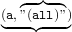

NEWFANGLE is a tool for newfangled literate programming. Newfangled is defined as New and often needlessly novel by THEFREEDICTIONARY.COM.
In this case, newfangled means yet another new and improved method for literate programming.
LITERATE PROGRAMMING has a long history starting with the great DONALD KNUTH himself, whose literate programming tools seem to make use of as many escape sequences for semantic markup as TEX itself.
NORMAN RAMSEY wrote the NOWEB set of tools (notangle, noweave and noroots) and helpfully reduced the amount of magic character sequences to pretty much just << and @, and in doing so brought the wonders of literate programming within my reach.
While using the LY X editor for LATEX editing I had various troubles with the noweb tools, some of which were my fault, some of which were noweb’s fault and some of which were LY X’s fault.
NOWEB generally brought literate programming to the masses through removing some of the complexity of the original literate programming, but this would be of no advantage to me if the LY X / LATEX combination brought more complications in their place.
NEWFANGLE was thus born — as an awk replacement for notangle, adding some important features, like better integration with LY X and LATEX, multiple output format conversions, and fixing notangle bugs like indentation when using -L for line numbers.
Significantly, newfangle is just one program which replaces various programs in Noweb. Noweave is done away with and implemented directly as LATEX macros, and noroots is implemented as a function of the untangler NEWFANGLE.
Newfangle is written in awk for portability reasons, awk being available for most platforms. A python conversion will probably be attempted for the benefit of LY X. (Hasn’t anyone implemented awk in python yet?)
As an extension to many literate-programming styles, Newfangle permits code chunks to take parameters and thus operate somewhat like C pre-processor macros, or like C++ templates.
Newfangle is licensed under the GPL 3[?] (or later). This doesn’t mean that you can’t use or distribute newfangle with sources of an incompatible license, but it means you must make the source of newfangle available too.
As newfangle is currently written in AWK, an interpreted language, this should not be too hard.
4⟨gpl3–copyright[1] 4⟩≡
Newfangle is a replacement for noweb, which consists of notangle, noroots and noweave.
Like notangle and noroots it can read multiple named files, or from stdin.
The -r option causes newfangle to behave like noroots.
newfangle -r filename.tex
will print out the newfangle roots of a tex file.
Unlike the noroots command, the roots are not enclosed in <<name>>, unless at least one of the roots is defined using the notangle style <<name>>=.
Also, unlike noroots, it prints out all roots — not just those that are not used elsewhere. I find that a root not being used, doesn’t make it particularly top level, and so-called top level roots could also be included in another root as well.
My convention is that top level roots to be extracted begin with ./ and have the form of a filename.
Makefile.inc, discussed in 4, can automatically extract all such sources.
notangle’s -R and -L options are supported.
The standard way to extract a file would be:
newfangle -R./Makefile.inc newfangle.tex > ./Makefile.inc
Unlike the noroots command, the -L option does not break indenting.
Also, thanks to mode tracking (described in 7) the -L option does not interrupt (and break) multi-line C macros either.
This does mean that sometimes the compiler might calculate the source line wrongly when generating error messages in such cases, but there isn’t any other way around if multi-line macros include other chunks.
The noweave replacement is a set of LATEX macros dependant upon noweb.sty, and which can be included with:
\usepackage{newfangle.sty}
The LATEX macros are shown in section 13.2, and are part of a LY X module file newfangle.module, which automatically includes the macros in the document pre-amble when the newfangle LY X module is used.
Because the noweave replacement is impemented in LATEX, there is no processing stage required before running the latex command. LATEX may need running two or more times, so that the code chunk references can be fully calculated.
The noweb.sty package is required as it is used for formatting the code chunk captions
The listings.sty package is also required, as it is used for formatting the code chunks themselves.
The xargs.sty package is also required.
Todo. Should really follow on from a part-0 explanation of what literate programming is.
Copy newfangle.module to your LY X layouts directory, which for unix users will be ~/.lyx/layouts
You will need to reconfigure LY X by clicking Tools ⊳ Reconfigure, and then re-start LY X.
Make sure you don’t have a conversion defined for Lyx → Program
From the menu Tools ⊳ Preferences, add a conversion from Latex(Plain) → Program as:
set -x ; newfangle -Rlyx-build $$i |
env LYX_b=$$b LYX_i=$$i LYX_o=$$o LYX_p=$$p LYX_r=$$r bash
(But don’t cut-n-paste it from this document or you’ll be pasting a multi-line string which will break your lyx preferences file).
I hope that one day, LY X will set these into the environment when calling the build script.
You may also want to consider adding options to this conversion…
parselog=/usr/share/lyx/scripts/listerrors
…but if you do you will lose your stderr1.
Now, a shell script chunk called lyx-build will be extracted and run whenever you choose the Document ⊳ Build Program menu item.
The lyx-build script for this document is in section 14.1 and on a unix system will extract newfangle.module and the newfangle awk script, and run some basic tests.
It is not necessary to base your literate document on any of the original LY X literate classes; so select a regular class for your document type.
Add the new module Newfangle Literate Listings and possibly also Logical Markup.
In the drop-down style listbox you should notice a new style defined, called Chunk.
When you wish to insert a literate chunk, you enter it’s plain name in the Chunk style, instead of the older method that used <<name>>= type tags. Following the chunk name, you insert a listing with: Insert ⊳ Program Listing.
Inside the white listing box you can type (or paste using shift+ctrl+V) your listing. There is not need to use ctrl+enter at the end of lines as with some older LY X literate techniques — just press enter as normal.
In the final document, the code is formatted using the LSTLISTINGS package. The chunk style doesn’t just define the chunk name, but can also define any other chunk options supported by the lstlistings package \lstset command. In fact, what you type in the chunk style is raw latex. If you want to set the chunk language without having to right-click the listing, just add ,lanuage=C after the chunk name. (Currently the language will affect all subsequent listings, so you may need to specify ,language= quite a lot).
Of course you can do this by editing the listings box advanced properties by right-clicking on the listings box, but that takes longer, and you can’t see at-a-glance what the advanced settings are while editing the document; also advanced settings apply only to that box — the chunk settings apply through the rest of the document2.
As lstlistings is used to set the code chunks, it’s \lstset command can be used in the pre-amble to set some document wide settings.
If your source has many words with long sequences of capital letters, then columns=fullflexible may be a good idea, or the capital letters will get crowded. (I think lstlistings ought to use a slightly smaller font for captial letters so that they still fit).
The font family \ttfamily looks more normal for code, but has no bold (an alternate typewriter font is used).
With \ttfamily, I must also specify columns=fullflexible or the wrong letter spacing is used.
In my LeTEX pre-amble I usually specialise my code format with:
16⟨document–preamble[1] 16, add to ⟩≡This chapter needs revising Here we describe a Makefile.inc that you can include in your own Makefiles, or glue as a recursive make to other projects.
The Makefile.inc described here was put together for a Samba4 vfs module, but can be used in any Make project, including automake projects.
Whitespace formatting is very important in a Makefile. The first character of each command line must be a TAB.
target: pre-requisite
→ action
→ action
But a TAB is pretty hard to enter into most of the Lyx formats and insets I’ve been using. An alternative is to use a semi-colon after the pre-requisite, and a backslash at the end of each line (except the last). Then any whitespace (or none) can prefix each action.
target: pre-requisite ; \
␣␣action \
␣␣action
This is the style that we use and it works pretty well for GNU make at least.
We also adopt a convention that code chunks whose names beginning with ./ should always be automatically extracted from the document. Code chunks whose names do not begin with ./ are for internal reference. (This doesn’t prevent such chunks from being extracted directly).
It seems convenient to have the makefile extract or update the C source files as part of it’s operation. It also seems convenient to have the makefile itself extracted from this document.
It would also be convenient to have the code to extract the makefile from this document to also be part of this document, however we have to start somewhere and this unfortunately requires us to type at least a few words by hand to start things off.
Therefore we will have a minimal root fragment, which, when extracted, can cope with extracting the rest of the source. perhaps with this shell script, which could be called autoboot.
18⟨* [1] 18, add to ⟩≡The general Makefile can be invoked with ./autoboot and can also be included into any automake file to automatically re-generate the source files.
The autoboot can be extracted with this command:
lyx -e latex newfangle.lyx && \
newfangle newfangle.lyx > ./autoboot
This looks simple enough, but as mentioned, newfangle has to be had from somewhere before it can be extracted.
When the lyx-build chunk is executed, the current directory will be a temporary directory, and LYX_SOURCE will refer to the tex file in this temporary directory. This is unfortunate as our makefile wants to run from the project directory where the Lyx file is kept.
We can extract the project directory from $$r, and derive the probable Lyx filename from the noweb file that Lyx generated.
19a⟨lyx–build–helper[1] 19a, add to ⟩≡ 84c ⊳And then we can define a lyx-build fragment similar to the autoboot fragment
19b⟨lyx–build[1] 19b, add to ⟩≡ 84a ⊳
Makefile.inc will cope with extracting all the other source files from this document and keeping them up to date.
It may also be included by a Makefile or Makefile.am defined in a Lyx document to automatically deal with the extraction of source files and documents.
A makefile has two parts; variables must be defined before the targets that use them.
20a⟨./Makefile.inc[1] 20a, add to ⟩≡We first define NOWEB_SOURCE to hold the name of this Lyx file.
20b⟨Makefile.inc–vars[1] 20b, add to ⟩≡ 21c ⊳
The makefile glue described here is used when building Samba4 vfs modules.
If you are defining a module of an existing program you may find it easier to use a slight recursive make instead of including the makefile directly. This way there is less chance of definitions in Makefile.inc interfering with definitions in the main makefile, or with definitions in other Makefile.inc from other noweb modules.
The glue works by adding a .PHONY target to call the recursive make, and adding this target as an additional pre-requisite to the existing targets.
In this example, the existing build system already has a build target for example.o, so we just add another pre-requisite to that. In this case we use example.tex.stamp as a pre-requisite, the stamp file’s modified time indicating when all sources were extracted.
20c⟨makefile–glue[1] 20c, add to ⟩≡ 21a ⊳The target for this new pre-requisite is generated by a recursive make using Makefile.inc which will make sure that the source is up to date, before it is built by the main projects makefile.
21a⟨makefile–glue[2] 20c, add to ⟩+≡ ⊲20c 21b ⊳We can do similar glue for the docs, clean and distclean targets. In this example our build system is using a double colon for these targets, so we use the same in our glue.
21b⟨makefile–glue[3] 20c, add to ⟩+≡ ⊲21aWe could do similarly for install targets to install the generated docs.
The first stage will always be to convert the Lyx file to a LATEX file; this must be so not only because newfangle needs to to run on a TEX file, but also because the Lyx command server-goto-file-line1 insists that the line number provided is a line in the TEX file, and always reverse maps this to derive the line in the Lyx docment.
The command [[lyx -e literate noweb-lyx.lyx]] will produce [[noweb-lyx.nw]] a tex file, so we define the noweb target to be the same as the Lyx file but with the .nw extension.
21c⟨Makefile.inc–vars[2] 20b, add to ⟩+≡ ⊲20b 22a ⊳ 21d⟨Makefile.inc–targets[1] 21d, add to ⟩≡ 22c ⊳
The program source is extracted using newfangle, which is designed to operate on a LATEX document.
22a⟨Makefile.inc–vars[3] 20b, add to ⟩+≡ ⊲21c 22b ⊳The Lyx document can result in any number of source documents, but not all of these will be changed each time the Lyx document is updated. We certainly don’t want to update the timestamps of these files and cause the whole source tree to be recompiled just because the Lyx document was edited.
To solve this problem we use a stamp file which is always updated each time the sources are extracted from the LATEX document. If the stamp file is older than the LATEX document, then we can make an attempt to re-extract the sources.
22b⟨Makefile.inc–vars[4] 20b, add to ⟩+≡ ⊲22a 23a ⊳ 22c⟨Makefile.inc–targets[2] 21d, add to ⟩+≡ ⊲21d 23b ⊳
We compute NEWFANGLE_SOURCES to hold the names of all the C source files defined in this document. We compute this only once, by means of := in assignent. The sed deletes the any << and >> which may surround the roots names (for noroots compatibility).
As we use chunk names beginning with ./ to denote top level fragments that should be extracted, we filter out all fragments that do not begin with ./
23a⟨Makefile.inc–vars[5] 20b, add to ⟩+≡ ⊲22b 23e ⊳We define a convenient target called newfangle_sources to re-extract the source if the LATEX file has been updated.
23c⟨Makefile.inc–targets[4] 21d, add to ⟩+≡ ⊲23b 23d ⊳And also a convenient target to remove extracted sources.
23d⟨Makefile.inc–targets[5] 21d, add to ⟩+≡ ⊲23c 25b ⊳This if_extension macro takes 4 arguments: the filename (1), some extensions to match (2) and a some shell command to return if the filename matches the exentions (3), or not (4).
23e⟨Makefile.inc–vars[6] 20b, add to ⟩+≡ ⊲23a 24a ⊳For some source files like C files, we want to output the line number and filename of the original LATEX document from which the source came.
To make this easier we define the file extensions for which we want to do this.
24a⟨Makefile.inc–vars[7] 20b, add to ⟩+≡ ⊲23e 24b ⊳We can then use the if_extensions macro to define a macro which expands out to the -L option if newfangle is being invoked in a C source file, so that C compile errors will refer to the line number in the Lyx document.
24b⟨Makefile.inc–vars[8] 20b, add to ⟩+≡ ⊲24a 24c ⊳We can use a similar trick to define an indent macro which takes just the filename as an argument and can return a pipeline stage calling the indent command. Indent can be turned off with make newfangle_sources indent=
24c⟨Makefile.inc–vars[9] 20b, add to ⟩+≡ ⊲24b 24d ⊳We now define the pattern for extracting a file. The files are written using noweb’s cpif 2 so that the file timestamp will not be touched if the contents haven’t changed. This avoids the need to rebuild the entire project because of a typographical change in the documentation, or if only a few C source files have changed.
24d⟨Makefile.inc–vars[10] 20b, add to ⟩+≡ ⊲24c 25a ⊳We define a target which will extract or update all sources. To do this we first defined a makefile template that can do this for any source file in the LATEX document.
25a⟨Makefile.inc–vars[11] 20b, add to ⟩+≡ ⊲24d 25d ⊳We then enumerate the discovered NEWTANGLE_SOURCES to generate a makefile rule for each one using the makefile template we defined above.
25b⟨Makefile.inc–targets[6] 21d, add to ⟩+≡ ⊲23d 25c ⊳These will all be built with NEWFANGLE_SOURCE_STAMP.
We also remove the generated sources on a make distclean.
25c⟨Makefile.inc–targets[7] 21d, add to ⟩+≡ ⊲25b 26a ⊳
We then identify the intermediate stages of the documentation and their build and clean targets.
We produce a pdf file from the tex file.
25d⟨Makefile.inc–vars[12] 20b, add to ⟩+≡ ⊲25a 26b ⊳We run pdflatex twice to be sure that the contents and aux files are up to date. We certainly are required to run pdflatex twice if these files do not exist!
26a⟨Makefile.inc–targets[8] 21d, add to ⟩+≡ ⊲25c 26c ⊳
Currently we only build pdf as a final format, but NEWFANGLE_DOCS may later hold other output formats.
26b⟨Makefile.inc–vars[13] 20b, add to ⟩+≡ ⊲25dWe also define newfangle_docs as a convenient phony target<
26c⟨Makefile.inc–targets[9] 21d, add to ⟩+≡ ⊲26a 26d ⊳And define a convenient clean_noweb_docs which we add to the regular clean target
26d⟨Makefile.inc–targets[10] 21d, add to ⟩+≡ ⊲26c
If Makefile.inc is included into Makefile, then extracted files can be updated with this command:
make newfangle_sources
otherwise, with:
make -f Makefile.inc newfangle_sources
We use the copyright notice from chapter .
30a⟨./newfangle[1] 30a, add to ⟩≡ 30b ⊳We also use code from Arnold Robbins public domain getopt (1993 revision) defined in chapter 12, and naturally want to attribute this appropriately.
30b⟨./newfangle[2] 30a, add to ⟩+≡ ⊲30a 30c ⊳And include the following chunks
30c⟨./newfangle[3] 30a, add to ⟩+≡ ⊲30b 33 ⊳The portable way to erase an array in awk is to split the empty string, like this:
30d⟨awk–delete–array(ARRAY)[1] 30d, add to ⟩≡ 30e⟨dump–array(ARRAY)[1] 30e, add to ⟩≡
Fatal errors are issued with the error function:
31a⟨error()()[1] 31a, add to helper-functions⟩≡ 31b ⊳LATEX arguments to lstlistings macros are a comma seperated list of key-value pairs. Values containing commas are enclosed in { braces }, which is to be expected for LATEX.
A sample expressions is:
name=thomas, params={a, b}, something, something-else
but we see that this is just a simpler form of this expression:
name=freddie, foo={bar=baz, quux={quirk, a=fleeg}}, etc
We may consider that we need a function that can parse such LATEX expressions and assign the values to an AWK associated array, perhaps using a recursive parser into a multi-dimensional hash1, resulting in:
| key | value |
| a[name] | freddie |
| a[foo, bar] | baz |
| a[foo, quux, quirk] | |
| a[foo, quux, a] | fleeg |
| a[etc] | |
Oon reflection it seems that sometimes such nesting is not desirable, as the braces are also used to delimit values that contain commas — we may consider that
name={williamson, freddie}
should assign williamson, freddie to name.
In fact we are not so interested in the detail so as to be bothered by this, which turns out to be a good thing for two reasons. Firstly LATEX has a malleable parser with no strict syntax, and secondly whether or not williamson and freddie should count as two items will be context dependant anyway.
We need to parse this latex for only one reason; which is that we are extending lstlistings to add some additional arguments which will be used to express chunk parameters and other chunk options.
Further on we define a \Chunk LATEX macro whose arguments will consist of a the chunk name, optionally followed by a comma and then a comma separated list of arguments. In fact we will just need to prefix name= to the arguments to in order to create valid lstlistings arguments.
There will be other arguments supported too;
achunk,language=C,params=name;address
Function ⟨get_chunk_args() 34a⟩will accept two paramters, text being the text to parse, and values being an array to receive the parsed values as described above. The optional parameter path is used during recursion to build up the multi-dimensional array path.
33⟨./newfangle()[4] 30a, add to ⟩+≡ ⊲30c 34a⟨get_chunk_args()()[1] 34a, add to ⟩≡ 34b ⊳The strategy is to parse the name, and then look for a value. If the value begins with a brace {, then we recurse and consume as much of the text as necessary, returning the remaining text when we encounter a leading close-brace }. This being the strategy — and executed in a loop — we realise that we must first look for the closing brace (perhaps preceded by white space) in order to terminate the recursion, and returning remaining text.
34b⟨get_chunk_args()()[2] 34a, add to ⟩+≡ ⊲34aWe can see that the text could be inspected with this regex:
34c⟨parse–chunk–args()[1] 34c, add to ⟩≡ 34d ⊳and that a will have the following values:
| a[n] | assigned text |
| 1 | freddie |
| 2 | =freddie, foo={bar=baz, quux={quirk, a=fleeg}}, etc |
| 3 | = |
| 4 | freddie, foo={bar=baz, quux={quirk, a=fleeg}}, etc |
| 5 | freddie |
| 6 | , foo={bar=baz, quux={quirk, a=fleeg}}, etc |
a[3] will be either = or , and signify whether the option named in a[1] has a value or not (respectively).
If the option does have a value, then if the expression substr(a[4],1,1) returns a brace { it will signify that we need to recurse:
34d⟨parse–chunk–args()[2] 34c, add to ⟩+≡ ⊲34cWe can test this function like this:
35a⟨gca–test.awk()[1] 35a, add to ⟩≡which should give this output:
35b⟨gca–test.awk–results()[1] 35b, add to ⟩≡
Arguments to paramterized chunks are expressed in round brackets as a comma separated list of optional arguments. For example, a chunk that is defined with:
\Chunk{achunk, params=name ; address}
could be invoked as:
\chunkref{achunk}(John Jones, jones@example.com)
An argument list may be as simple as in \chunkref{pull}(thing, otherthing) or as complex as:
\chunkref{pull}(things[x, y], get_other_things(a, "(all)"))
— which for all it’s commas and quotes and parenthesis represents only two parameters: things[x, y] and get_other_things(a, "(all)").
If we simply split parameter list on commas, then the comma in things[x,y] would split into two seperate arguments: things[x and y]— neither of which make sense on their own.
One way to prevent this would be by refusing to split text between matching delimiters, such as [, ], (, ), {, } and most likely also ", " and ’, ’. Of course this also makes it impossible to pass such mis-matched code fragments as parameters, but I think that it would be hard for readers to cope with authors who would pass such code unbalanced fragments as chunk parameters2.
Unfortunately, the full set of matching delimiters may vary from language to language. In certain C++ template contexts, < and > would count as delimiters, and yet in other contexts they would not.
This puts me in the unfortunate position of having to parse-somewhat all programming languages without knowing what they are!
However, if this universal mode-tracking is possible, then parsing the arguments would be trivial. Such a mode tracker is described in chapter 7 and used here with simplicity.
36⟨parse_chunk_args()[1] 36, add to ⟩≡
Within the body of the chunk, the parameters are referred to with: ${name} and ${address}. There is a strong case that a LATEX style notation should be used, like \param{name} which would be expressed in the listing as =<\param{name}> and be rendered as =<\param{name}>. Such notation would make me go blind, but I do intend to adopt it3.
We therefore need a function expand_chunk_args which will take a block of text, a list of permitted parameters, and the arguments which must substitute for the parameters.
Here we split the text on ${ which means that all parts except the first will begin with a parameter name which will be terminated by }. The split function will consume the literal ${ in each case.
37a⟨expand_chunk_args()()[1] 37a, add to ⟩≡First, we produce an associative array of substitution values indexed by parameter names. This will serve as a cache, allowing us to look up the replacement values as we extract each name.
37b⟨substitute–chunk–args()[1] 37b, add to ⟩≡ 37c ⊳We accumulate substituted text in the variable text. As the first part of the split function is the part before the delimiter — which is ${ in our case — this part will never contain a parameter reference, so we assign this directly to the result kept in $text.
37c⟨substitute–chunk–args()[2] 37b, add to ⟩+≡ ⊲37b 37d ⊳We then iterate over the remaining values in the array4, and substitute each reference for it’s argument.
37d⟨substitute–chunk–args()[3] 37b, add to ⟩+≡ ⊲37cAfter the split on ${ a valid parameter reference will consist of valid parameter name terminated by a close-brace }. A valid character name begins with the underscore or a letter, and may contain letters, digits or underscores.
A valid looking reference that is not actually the name of a parameter will be and not substituted. This is good because there is nothing to substitute anyway, and it avoids clashes when writing code for languages where ${…} is a valid construct — such constructs will not be interfered with unless the parameter name also matches.
38⟨substitute–chunk–arg()[1] 38, add to ⟩≡lstlistings and newfangle both recognize source languages, and perform some basic parsing. lstlistings can detect strings and comments within a language definition and perform suitable rendering, such as italics for comments, and visible-spaces within strings.
Newfangle similarly can recognize strings, and comments, etc, within a language, so that any chunks included with \chunkref can be suitably escape or quoted.
As an example, in the C language there are a few parse modes, affecting the interpretation of characters.
One parse mode is the strings mode. The string mode is commenced by an un-escaped quotation mark " and terminated by the same. Within the string mode, only one additional mode can be commenced, it is the backslash mode \, which is always terminated by the folloing character.
Other modes are [ which is terminated by a ] (unless it occurs in a string).
Consider this line of C code:
things1. [ mode, get_other_things2. ( mode3. ” mode
Mode nesting prevents the close parenthesis in quote mode (part 3) from terminating the parenthesis mode (part 2).
Each language has a set of modes, the default mode being the null mode. Each mode can lead to other modes.
For instance, consider this chunk with language=perl:
40a⟨example–perl()[1] 40a, add to ⟩≡If it were included in a chunk with language=sh, like this:
40b⟨example–sh()[1] 40b, add to ⟩≡newfangle would need to generate output like this if it were to work:
perl -e "print \"hello world $0\\n\";"
See that the double quote ", and $ in the regex have been quoted with a back-slash to protect them from shell interpretation.
If that were then included in a chunk with language=make, like this:
40c⟨example–makefile()[1] 40c, add to ⟩≡We would need the output to look like this — note the $$:
target: pre-req
perl -pe "s/\"\$$/’/;"
In order to make this work, we need to define a mode-tracker supporting each language, that can detect the various quoting modes, and provide a transformation that must be applied to any included text so that included text will be interpreted correctly after any interpolation that it may be subject to at run-time.
For example, the sed transformation for text to be inserted into sh double-quoted strings would be something like:
s/\\/\\\\/g;s/$/\\$/g;s/"/\\"/g;
which protects \ $ ".
The mode tracker must also track nested mode-changes, as in this sh example.
echo "hello ‘id …‘"
↑
Any characters inserted at the point marked ↑ would need to be escaped, including ‘ | * among others. First it would need escaping for the back-ticks ‘, and then for the double-quotes ".
Escaping need not occur if the format and mode of the included chunk matches that of the including chunk.
As each chunk is output a new mode tracker for that language is initialized in it’s normal state. As text is output for that chunk the output mode is tracked. When a new chunk is included, a transformation appropriate to that mode is selected and pushed onto a stack of transformations. Any text to be output is first passed through this stack of transformations.
It remains to consider if the chunk-include function should return it’s generated text so that the caller can apply any transformations (and formatting), or if it should apply the stack of transformations itself.
Note that the transformed text should have the property of not being able to change the mode in the current chunk.
All modes are stored in a single multi-dimensional hash. The first index is the language, and the second index is the mode-identifier. The third indexes are terminators, and optionally, submodes, and delimiters.
A useful set of mode definitions for a nameless general C-type language is shown here. (Don’t be confused by the double backslash escaping needed in awk. One set of escaping is for the string, and the second set of escaping is for the regex).
Submodes are entered by the characters \ " ’ { ( [ /*
42a⟨common–mode–definitions(language)[1] 42a, add to ⟩≡ 42b ⊳In the default mode, a comma surrounded by un-important white space is a delimiter of language items.
42b⟨common–mode–definitions(language)[2] 42a, add to ⟩+≡ ⊲42a 43a ⊳and should pass this test:
42c⟨test:mode–definitions(language)[1] 42c, add to ⟩≡ 44e ⊳Nested modes are identified by a backslash, a double or single quote, various bracket styles or a /* comment.
For each of these sub-modes modes we must also identify at a mode terminator, and any sub-modes or delimiters that may be entered1.
The backslash mode has no submodes or delimiters, and is terminated by any character. Note that we are not so much interested in evaluating or interpolating content as we are in delineating content. It is no matter that a double backslash (\\) may represent a single backslash while a backslash-newline may represent white space, but it does matter that the newline in a backslash newline should not be able to terminate a C pre-processor statement; and so the newline will be consumed by the backslash however it is to be interpreted.
43a⟨common–mode–definitions(language)[3] 42a, add to ⟩+≡ ⊲42b 44d ⊳
Common languages support two kinds of strings quoting, double quotes and single quotes.
In a string we have one special mode, which is the backslash. This may escape an embedded quote and prevent us thinking that it should terminate the string.
43b⟨mode:common–string(language;quote)[1] 43b, add to ⟩≡ 43c ⊳Otherwise, the string will be terminated by the same character that commenced it.
43c⟨mode:common–string(language;quote)[2] 43b, add to ⟩+≡ ⊲43b 44a ⊳In C type languages, certain escape sequences exist in strings. We need to define mechanism to enclode any chunks included in this mode using those escape sequences. These are expressed in two parts, s meaning search, and r meaning replace.
The first substitution is to replace a backslash with a double backslash. We do this first as other substitutions may introduce a backslash which we would not then want to escape again here.
Note: Backslashes need double-escaping in the search pattern but not in the replacement string, hence we are replacing a literal \ with a literal \\.
44a⟨mode:common–string(language;quote)[3] 43b, add to ⟩+≡ ⊲43c 44b ⊳If the quote character occurs in the text, it should be preceded by a backslash, otherwise it would terminate the string unexpectedly.
44b⟨mode:common–string(language;quote)[4] 43b, add to ⟩+≡ ⊲44a 44c ⊳Any newlines in the string, must be replaced by \n
44c⟨mode:common–string(language;quote)[5] 43b, add to ⟩+≡ ⊲44bFor the common modes, we define this string handling for double and single quotes.
44d⟨common–mode–definitions(language)[4] 42a, add to ⟩+≡ ⊲43a 45b ⊳Working strings should pass this test:
44e⟨test:mode–definitions(language)[2] 42c, add to ⟩+≡ ⊲42c 49a ⊳
Where quotes are closed by the same character, parentheses, brackets and braces are closed by an alternate character.
45a⟨mode:common–brackets(language;open;close)[1] 45a, add to ⟩≡Note that the open is NOT a regex but the close token IS.
45b⟨common–mode–definitions(language)[5] 42a, add to ⟩+≡ ⊲44d
We can define /* comment */ style comments and //comment style comments to be added to any language:
46a⟨mode:multi–line–comments(language)[1] 46a, add to ⟩≡ 46b⟨mode:single–line–slash–comments(language)[1] 46b, add to ⟩≡We can also define # comment style comments (as used in awk and shell scripts) in a similar manner.
46c⟨mode:add–hash–comments(language)[1] 46c, add to ⟩≡In C, the # denotes pre-processor directives which can be multi-line
46d⟨mode:add–hash–defines(language)[1] 46d, add to ⟩≡We can add these definitions to various languages
47a⟨mode–definitions(language;quote)[1] 47a, add to ⟩≡ 48b ⊳The awk definitions should allow a comment block like this:
47b⟨test:comment–quote(language;quote)[1] 47b, add to ⟩≡ 47c⟨test:comment–text(language;quote)[1] 47c, add to ⟩≡to come out like this:
47d⟨test:comment–quote:result(language;quote)[1] 47d, add to ⟩≡The C definition for such a block should have it come out like this:
47e⟨test:comment–quote:C–result(language;quote)[1] 47e, add to ⟩≡
This pattern is in-complete, but meant to detect naked regular expressions in awk and perl; e.g. /.*$/, however required capabilities are not present.
Current it only detects regexes anchored with ^ as used in newfangle.
For full regex support, modes need to be named not after their starting character, but some other more fully qualified name.
48a⟨mode:add–naked–regex(language)[1] 48a, add to ⟩≡
Still need to add add s/, submod /, terminate both with //
Also, the parser must return any spare text at the end that has not been processed due to a mode terminator being found.
49a⟨test:mode–definitions(language)[3] 42c, add to ⟩+≡ ⊲44e 49b ⊳We must also be able to parse the example given earlier.
49b⟨test:mode–definitions(language)[4] 42c, add to ⟩+≡ ⊲49a
The mode tracker holds its state in a stack based on a hash. This function, when passed an empty hash will intialize it.
49c⟨new_mode_tracker()(language)[1] 49c, add to ⟩≡Because awk functions cannot return an array, we must create the array first and pass it in, so we have a newfangle macro to do this:
50a⟨new–mode–tracker(context;language;mode)[1] 50a, add to ⟩≡
And for tracking modes, we dispatch to a mode-tracker action based on the current language
50b⟨mode_tracker(context;language;mode)[1] 50b, add to ⟩≡ 50c ⊳This implies that any chunk must be syntactically whole; for instance, this is fine:
50e⟨test:whole–chunk(context;language;mode)[1] 50e, add to ⟩≡ 50f⟨test:say–hello(context;language;mode)[1] 50f, add to ⟩≡But this is not fine; the chunk ⟨test:hidden–else 51b⟩is not properly cromulent.
51a⟨test:partial–chunk(context;language;mode)[1] 51a, add to ⟩≡ 51b⟨test:hidden–else(context;language;mode)[1] 51b, add to ⟩≡These tests will check for correct behaviour:
51c⟨test:cromulence(context;language;mode)[1] 51c, add to ⟩≡
We must avoid recursion as a language construct because we intend to employ mode-tracking to track language mode of emitted code, and the code is emitted from a function which is itself recursive, so instead we implement psuedo-recursion using our own stack based on a hash.
51d⟨mode_tracker()(context;language;mode)[1] 51d, add to ⟩≡ 52a ⊳We could be re-commencing with a valid context, so we need to setup the state according to the last context.
52a⟨mode_tracker()(context;language;mode)[2] 51d, add to ⟩+≡ ⊲51d 52d ⊳First we construct a single large regex combining the possible sub-modes for the current mode along with the terminators for the current mode.
52b⟨parse_chunk_args–reset–modes(context;language;mode)[1] 52b, add to ⟩≡ 52c ⊳If we don’t find anything to match on — probably because the language is not supported — then we return the entire text without matching anything.
52c⟨parse_chunk_args–reset–modes(context;language;mode)[2] 52b, add to ⟩+≡ ⊲52b 52d⟨mode_tracker()(context;language;mode)[3] 51d, add to ⟩+≡ ⊲52a 52e ⊳We then iterate the text (until there is none left) looking for sub-modes or terminators in the regex.
52e⟨mode_tracker()(context;language;mode)[4] 51d, add to ⟩+≡ ⊲52d 52f ⊳A bug that creeps in regularly during development is bad regexes of zero length which result in an infinite loop (as no text is consumed), so I catch that right away with this test.
52f⟨mode_tracker()(context;language;mode)[5] 51d, add to ⟩+≡ ⊲52e 53a ⊳part is defined as the text up to the sub-mode or terminator, and this is appended to item — which is the current text being gathered. If a mode has a delimiter, then item is reset each time a delimiter is found.
item, item
53a⟨mode_tracker()(context;language;mode)[6] 51d, add to ⟩+≡ ⊲52f 53b ⊳We must now determine what was matched. If it was a terminator, then we must restore the previous mode.
53b⟨mode_tracker()(context;language;mode)[7] 51d, add to ⟩+≡ ⊲53a 53c ⊳If a delimiter was matched, then we must store the current item in the parsed values array, and reset the item.
53c⟨mode_tracker()(context;language;mode)[8] 51d, add to ⟩+≡ ⊲53b 53d ⊳otherwise, if a new submode is detected (all submodes have terminators), we must create a nested parse context until we find the terminator for this mode.
53d⟨mode_tracker()(context;language;mode)[9] 51d, add to ⟩+≡ ⊲53c 54a ⊳In the final case, we parsed to the end of the string. If the string was entire, then we should have no nested mode context, but if the string was just a fragment we may have a mode context which must be preserved for the next fragment. Todo: Consideration ought to be given if sub-mode strings are split over two fragments.
54a⟨mode_tracker()(context;language;mode)[10] 51d, add to ⟩+≡ ⊲53d
All the mode tracker chunks are referred to here:
54b⟨mode–tracker(context;language;mode)[1] 54b, add to ⟩≡
We can test this function like this:
54c⟨pca–test.awk(context;language;mode)[1] 54c, add to ⟩≡which should give this output:
55a⟨pca–test.awk–results(context;language;mode)[1] 55a, add to ⟩≡
Each nested mode can optionally define a set of transforms to be applied to any text that is included from another language.
This code can perform transforms
55b⟨mode_tracker(context;language;mode)[4] 50b, add to ⟩+≡ ⊲50d 55c ⊳This function must append from index c onwards, and escape transforms from the supplied context, and return c + number of new transforms.
55c⟨mode_tracker(context;language;mode)[5] 50b, add to ⟩+≡ ⊲55bNewfangle recognizes noweb chunks, but as we also want better LATEX integration we will recognize any of these:
The variable chunking is used to signify that we are processing a code chunk and not document. In such a state, input lines will be assigned to the current chunk; otherwise they are ignored.
Our current scheme is to recognize the new lstlisting chunks, but these may be preceded by a \Chunk command which in LY X is a more convenient way to pass the chunk name to the \begin{lstlistings} command, and a more visible way to specify other lstset settings.
The arguments to the \Chunk command are a name, and then a comma-seperated list of key-value pairs after the manner of \lstset. (In fact within the LATEX \Chunk macro (section 13.2.1) the text name= is prefixed to the argument which is then literally passed to \lstset).
56⟨recognize–chunk(context;language;mode)[1] 56, add to ⟩≡ 57a ⊳We also make a basic attempt to parse the name out of the \lstlistings[name= chunk-name] text, otherwise we fall back to the name found in the previous chunk command. This attempt is very basic and doesn’t support commas or spaces or square brackets as part of the chunkname. We also recognize \begin{Chunk} which is convenient for some users2.
57a⟨recognize–chunk(context;language;mode)[2] 56, add to ⟩+≡ ⊲56 57b ⊳
We recognize notangle style chunks too:
57b⟨recognize–chunk(context;language;mode)[3] 56, add to ⟩+≡ ⊲57a 58a ⊳
Likewise, we need to recognize when a chunk ends.
The e in [e]end{lislisting} is surrounded by square brackets so that when this document is processed, this chunk doesn’t terminate early when the lstlistings package recognizes it’s own end-string! This doesn’t make sense as the regex is anchored with ^, which this line does not begin with!
58a⟨recognize–chunk(context;language;mode)[4] 56, add to ⟩+≡ ⊲57b 58b ⊳
All other recognizers are only of effect if we are chunking; there’s no point in looking at lines if they aren’t part of a chunk, so we just ignore them as efficiently as we can.
58c⟨recognize–chunk(context;language;mode)[6] 56, add to ⟩+≡ ⊲58b 59a ⊳
Chunk contents are any lines read while chunking is true. Some chunk contents are special in that they refer to other chunks, and will be replaced by the contents of these chunks when the file is generated.
We add the output record separator ORS to the line now, because we will set ORS to the empty string when we generate the output3.
59a⟨recognize–chunk(context;language;mode)[7] 56, add to ⟩+≡ ⊲58cIf a chunk just consisted of plain text, we could handle the chunk like this:
59b⟨process–chunk–simple(context;language;mode)[1] 59b, add to ⟩≡but in fact a chunk can include references to other chunks. Chunk includes are traditionally written as <<chunk-name>>, but we support other variations.
However, we also process tabs at this point, a tab at input can be replaced by a number of spaces defined by the tabs variable, set by the -T option. Of course this is poor tab behaviour, we should probably have the option to use proper counted tab-stops and process this on output.
59c⟨process–chunk–tabs(context;language;mode)[1] 59c, add to ⟩≡
If \lstset{escapeinside={=<}{>}} is set, then we can use =<\chunkref{ chunk-name}> in listings. The sequence =< was chosen because:
Unfortunately the =<…> that we use re-enters a LATEX parsing mode in which some characters are special, e.g. # \, and so these cause trouble if used in arguments to \chunkref. At some point I must fix the LATEX command \chunkref so that it can accept these literally, but until then, when writing chunkref argumemts that need these characters, I must use the forms \textbackslash{} and \#; so I also define a hacky chunk delatex whose purpose it is to remove these from any arguments parsed by newfangle, and used further on.
60a⟨delatex(text)[1] 60a, add to ⟩≡As each chunk line may contain more than one chunk include, we will split out chunk includes in an iterative fashion4.
First, as long as the chunk contains a \chunkref command we take as much as we can up to the first \chunkref command.
60b⟨process–chunk(text)[1] 60b, add to ⟩≡ 60c ⊳We keep track of the indent count, by counting the number of literal characters found. We can then preserve this indent on each output line when multi-line chunks are expanded.
We then process this first part literal text, and set the chunk which is still to be processed to be the text after the \chunkref command, which we will process next as we continue around the loop.
60c⟨process–chunk(text)[2] 60b, add to ⟩+≡ ⊲60b 61a ⊳We then consider the type of chunk command we have found, whether it is the newfangle style command beginning with =< or the older notangle style beginning with <<.
Newfangle chunks may have parameters contained within square brackets. These will be matched in line[3] and are considered at this stage of processing to be part of the name of the chunk to be included.
61a⟨process–chunk(text)[3] 60b, add to ⟩+≡ ⊲60c 61b ⊳The loop will continue until there are no more chunkref statements in the text, at which point we process the final part of the chunk.
61b⟨process–chunk(text)[4] 60b, add to ⟩+≡ ⊲61a 61c ⊳We add the newline character as a chunklet on it’s own, to make it easier to detect new lines and thus manage indentation when processing the output.
61c⟨process–chunk(text)[5] 60b, add to ⟩+≡ ⊲61bWe will also permit a chunk-part number to follow in square brackets, so that =<\chunkref{chunk-name[1]}> will refer to the first part only. This can make it easy to include a C function prototype in a header file, if the first part of the chunk is just the function prototype without the trailing semi-colon. The header file would include the prototype with the trailing semi-colon, like this:
=<\chunkref{chunk-name[1]}>;
This is handled in section 10.1.1
We should perhaps introduce a notion of language specific chunk options; so that perhaps we could specify:
=<\chunkref{chunk-name[function-declaration]}>;
which applies a transform function-declaration to the chunk — which in this case would extract a function prototype from a function.
At the start, first we set the default options.
63a⟨default–options(text)[1] 63a, add to ⟩≡Then we use getopt the standard way, and null out ARGV afterwards in the normal AWK fashion.
63b⟨read–options(text)[1] 63b, add to ⟩≡This is how we handle our options:
63c⟨handle–options(text)[1] 63c, add to ⟩≡We do all of this at the beginning of the program
63d⟨begin(text)[1] 63d, add to ⟩≡And have a simple help function
63e⟨help()(text)[1] 63e, add to ⟩≡We generate output by calling output_chunk, or listing the chunk names.
64a⟨generate–output(text)[1] 64a, add to ⟩≡We also have some other output debugging:
64b⟨debug–output(text)[1] 64b, add to ⟩≡We do both of these at the end. We also set ORS="" because each chunklet is not necessarily a complete line, and we already added ORS to each input line in section 8.3.
64c⟨end(text)[1] 64c, add to ⟩≡We write chunk names like this. If we seem to be running in notangle compatibility mode, then we enclose the name like this <<name>> the same way notangle does:
64d⟨output_chunk_names()(text)[1] 64d, add to ⟩≡This function would write out all chunks
64e⟨output_chunks()(text)[1] 64e, add to ⟩≡chunk_path holds a string consisting of the names of all the chunks that resulted in this chunk being output. It should probably also contain the source line numbers at which each inclusion also occured.
We first initialize the mode tracker for this chunk.
65a⟨write_chunk()(text)[1] 65a, add to ⟩≡ 65b ⊳
As mentioned in section 8.3.1, a chunk name may contain a part specifier in square brackets, limiting the parts that should be emitted.
65c⟨write_chunk()(text)[3] 65a, add to ⟩+≡ ⊲65b 65d ⊳We then create a mode tracker
65d⟨write_chunk()(text)[4] 65a, add to ⟩+≡ ⊲65c 66a ⊳We extract into chunk_params the names of the parameters that this chunk accepts, whose values were (optionally) passed in chunk_args.
66a⟨write_chunk()(text)[5] 65a, add to ⟩+≡ ⊲65d 66b ⊳To assemble a chunk, we write out each part.
66b⟨write_chunk()(text)[6] 65a, add to ⟩+≡ ⊲66aA part can either be a chunklet of lines, or an include of another chunk.
Chunks may also have parameters, specified in LATEX style with braces after the chunk name — looking like this in the document: chunkname{param1, param2}. Arguments are passed in square brackets: \chunkref{chunkname}[arg1, arg2].
Before we process each part, we check that the source position hasn’t changed unexpectedly, so that we can know if we need to output a new file-line directive.
66c⟨write–part(text)[1] 66c, add to ⟩≡To write an included chunk, we must detect any optional chunk arguments in parenthesis. Then we recurse calling ⟨write_chunk() 65a⟩.
66d⟨write–included–chunk(text)[1] 66d, add to ⟩≡Before we output a chunklet of lines, we first emit the file and line number if we have one, and if it is safe to do so.
Chunklets are generally broken up by includes, so the start of a chunklet is a good place to do this. Then we output each line of the chunklet.
When it is not safe, such as in the middle of a multi-line macro definition, lineno_suppressed is set to true, and in such a case we note that we want to emit the line statement when it is next safe.
67a⟨write–chunklets(text)[1] 67a, add to ⟩≡ 67b ⊳We then extract the chunklet text and expand any arguments.
67b⟨write–chunklets(text)[2] 67a, add to ⟩+≡ ⊲67a 67c ⊳If the text is a single newline (which we keep separate - see 8.3.1) then we increment the line number. In the case where this is the last line of a chunk and it is not a top-level chunk we replace the newline with an empty string — because the chunk that included this chunk will have the newline at the end of the line that included this chunk.
We also note by newline = 1 that we have started a new line, so that indentation can be managed with the following piece of text.
67c⟨write–chunklets(text)[3] 67a, add to ⟩+≡ ⊲67b 67d ⊳If this text does not represent a newline, but we see that we are the first piece of text on a newline, then we prefix our text with the current indent. NOTE: newline is a global output-state variable, but the indent is not.
67d⟨write–chunklets(text)[4] 67a, add to ⟩+≡ ⊲67c 68a ⊳Tail will soon no longer be relevant once mode-detection is in place.
68a⟨write–chunklets(text)[5] 67a, add to ⟩+≡ ⊲67d 68b ⊳If a line ends in a backslash — suggesting continuation — then we supress outputting file-line as it would probably break the continued lines.
68b⟨write–chunklets(text)[6] 67a, add to ⟩+≡ ⊲68aOf course there is no point in actually outputting the source filename and line number (file-line) if they don’t say anything new! We only need to emit them if they aren’t what is expected, or if we we not able to emit one when they had changed.
68c⟨write–file–line(text)[1] 68c, add to ⟩≡We check if a new file-line is needed by checking if the source line matches what we (or a compiler) would expect.
68d⟨check–source–jump(text)[1] 68d, add to ⟩≡Awk has pretty limited data structures, so we will use two main hashes. Uninterrupted sequences of a chunk will be stored in chunklets and the chunklets used in a chunk will be stored in chunks.
69a⟨constants(text)[1] 69a, add to ⟩≡The params mentioned are not chunk parameters for parameterized chunks, as mentioned in 6.2, but the lstlistings style parameters used in the \Chunk command1.
69b⟨chunk–storage–functions(text)[1] 69b, add to ⟩≡ 69c ⊳Chunk include represents a chunkref statement, and stores the requirement to include another chunk. The parameter indent represents the quanity of literal text characters that preceded this chunkref statement and therefore by how much additional lines of the included chunk should be indented.
69d⟨chunk–storage–functions(text)[3] 69b, add to ⟩+≡ ⊲69c 69e ⊳The indent is calculated by indent_string, which may in future convert some spaces into tab characters. This function works by generating a printf padded format string, like %22s for an indent of 22, and then printing an empty string using that format.
69e⟨chunk–storage–functions(text)[4] 69b, add to ⟩+≡ ⊲69dI use Arnold Robbins public domain getopt (1993 revision). This is probably the same one that is covered in chapter 12 of “Edition 3 of GAWK: Effective AWK Programming: A User’s Guide for GNU Awk” but as that is licensed under the GNU Free Documentation License, Version 1.3, which conflicts with the GPL3, I can’t use it from there (or it’s accompanying explanations), so I do my best to explain how it works here.
The getopt.awk header is:
71a⟨getopt.awk–header(text)[1] 71a, add to ⟩≡The provided explanation is:
71b⟨getopt.awk–notes(text)[1] 71b, add to ⟩≡The function follows. The final two parameters, thisopt and i are local variables and not parameters — as indicated by the multiple spaces preceding them. Awk doesn’t care, the multiple spaces are a convention to help us humans.
71c⟨getopt.awk–getopt()(text)[1] 71c, add to ⟩≡ 71d ⊳At this point, the option has been found and we need to know if it takes any arguments.
71d⟨getopt.awk–getopt()(text)[2] 71c, add to ⟩+≡ ⊲71cA test program is built in, too
72a⟨getopt.awk–begin(text)[1] 72a, add to ⟩≡The entire getopt.awk is made out of these chunks in order
72b⟨getopt.awk(text)[1] 72b, add to ⟩≡Although we only want the header and function:
72c⟨getopt(text)[1] 72c, add to ⟩≡Here we define a Lyx .module file that makes it convenient to use LY X for writing such literate programs.
This file ./newfangle.module can be installed in your personal .lyx/layouts folder. You will need to Tools Reconfigure so that LY X notices it. It adds a new format Chunk, which should precede every listing and contain the chunk name.
73a⟨./newfangle.module(text)[1] 73a, add to ⟩≡Because LY X modules are not yet a language supported by newfangle or lstlistings, we resort to this fake awk chunk below in order to have each line of the GPL3 license commence with a #
73b⟨gpl3–copyright.hashed(text)[1] 73b, add to ⟩≡
The purpose of the CHUNK style is to make it easier for LY X users to provide the name to \lstlistings. Normally this requires right-clicking on the listing, choosing settings, advanced, and then typing name=chunk-name. This has the further disadvantage that the name (and other options) are not generally visible during document editing.
The chunk style is defined as a LATEX command, so that all text on the same line is passed to the LATEX command Chunk. This makes it easy to parse using newfangle, and easy to pass these options on to the listings package. The first word in a chunk section should be the chunk name, and will have name= prepended to it. Any other words are accepted arguments to \lstset.
We set PassThru to 1 because the user is actually entering raw latex.
74a⟨chunkstyle(text)[1] 74a, add to ⟩≡ 74b ⊳To make the label very visible we choose a larger font coloured red.
74b⟨chunkstyle(text)[2] 74a, add to ⟩+≡ ⊲74a
We also define the Chunkref style which can be used to express cross references to chunks.
74c⟨chunkref (text)[1] 74c, add to ⟩≡
We require the LISTINGS, NOWEB and XARGS packages. As noweb defines it’s own \code environment, we re-define the one that LY X logical markup module expects here.
75a⟨./newfangle.sty(text)[1] 75a, add to ⟩≡ 75b ⊳We also define a CChunk macro, for use as: \begin{CChunk} which will need renaming to \begin{Chunk} when I can do this without clashing with \Chunk.
75b⟨./newfangle.sty(text)[2] 75a, add to ⟩+≡ ⊲75a 75c ⊳We also define a suitable \lstset of parameters that suit the literate programming style after the fashion of NOWEAVE.
75c⟨./newfangle.sty(text)[3] 75a, add to ⟩+≡ ⊲75b 75d ⊳We also define a notangle-like mechanism for escaping to LATEX from the listing, and by which we can refer to other listings. We declare the =<…> sequence to contain LATEX code, and include another like this chunk: =<\chunkref{chunkname}>. However, because =<…> is already defined to contain LATEX code for this document — this is a NEWFANGLE document after all — the code fragment below effectively contains the LATEX code: }{. To avoid problems with document generation, I had to declare an lstlistings property: escapeinside={} for this listing only; which in LY X was done by right-clicking the listings inset, choosing settings⊳ advanced.
75d⟨./newfangle.sty(text)[4] 75a, add to ⟩+≡ ⊲75c 76a ⊳Although our macros will contain the @ symbol, they will be included in a \makeatletter section by LY X; however we keep the commented out \makeatletter as a reminder. The listings package likes to centre the titles, but noweb titles are specially formatted and must be left aligned. The simplest way to do this turned out to be by removing the definition of \lst@maketitle. This may interact badly if other listings want a regular title or caption. We remember the old maketitle in case we need it.
76a⟨./newfangle.sty(text)[5] 75a, add to ⟩+≡ ⊲75d 76b ⊳
Our chunk command accepts one argument, and calls \ltset. Although \ltset will note the name, this is erased when the next \lstlisting starts, so we make a note of this in \lst@chunkname and restore in in lstlistings Init hook.
76b⟨./newfangle.sty(text)[6] 75a, add to ⟩+≡ ⊲76a 76c ⊳
Newfangle permits parameterized chunks, and requires the paramters to be specified as listings options. The newfangle script uses this, and although we don’t do anything with these in the LATEX code right now, we need to stop the listings package complaining.
76c⟨./newfangle.sty(text)[7] 75a, add to ⟩+≡ ⊲76b 77a ⊳As it is common to define a chunk which then needs appending to another chunk, and annoying to have to declare a single line chunk to manage the include, we support an append= option.
77a⟨./newfangle.sty(text)[8] 75a, add to ⟩+≡ ⊲76c 77b ⊳
We define a public macro \newfanglecaption which can be set as a regular title. By means of \protect, It expands to \newfangle@caption at the appriate time when the caption is emitted.
77b⟨./newfangle.sty(text)[9] 75a, add to ⟩+≡ ⊲77a 80a ⊳In this example, the current chunk is 22c, and therefore the third chunk on page 22.
It’s name is some-chunk.
The first chunk with this name (19b) occurs as the second chunk on page 19.
The previous chunk (22d) with the same name is the second chunk on page 22.
The next chunk (24d) is the fourth chunk on page 24.
The general noweb output format compactly identifies the current chunk, and references to the first chunk, and the previous and next chunks that have the same name.
This means that we need to keep a counter for each chunk-name, that we use to count chunks of the same name.
It would be natural to have a counter for each chunk name, but TEX would soon run out of counters1, so we have one counter which we save at the end of a chunk and restore at the beginning of a chunk.
80a⟨./newfangle.sty(text)[10] 75a, add to ⟩+≡ ⊲77b 81a ⊳We construct the name of this variable to store the counter to be the text lst-chunk- prefixed onto the chunks own name, and store it in \chunkcount.
We save the counter like this:
80b⟨save–counter(text)[1] 80b, add to ⟩≡and restore the counter like this:
80c⟨restore–counter(text)[1] 80c, add to ⟩≡If there does not already exist a variable whose name is stored in \chunkcount, then we know we are the first chunk with this name, and then define a counter.
Although chunks of the same name share a common counter, they must still be distinguished. We use is the internal name of the listing, suffixed by the counter value. So the first chunk might be something-1 and the second chunk be something-2, etc.
We also calculate the name of the previous chunk if we can (before we increment the chunk counter). If this is the first chunk of that name, then \prevchunkname is set to \relax which the noweb package will interpret as not existing.
81a⟨./newfangle.sty(text)[11] 75a, add to ⟩+≡ ⊲80a 81b ⊳After incrementing the chunk counter, we then define the name of this chunk, as well as the name of the first chunk.
81b⟨./newfangle.sty(text)[12] 75a, add to ⟩+≡ ⊲81a 81c ⊳We now need to calculate the name of the next chunk. We do this by temporarily skipping the counter on by one; however there may not actually be another chunk with this name! We detect this by also defining a label for each chunk based on the chunkname. If there is a next chunkname then it will define a label with that name. As labels are persistent, we can at least tell the second time LATEX is run. If we don’t find such a defined label then we define \nextchunkname to \relax.
81c⟨./newfangle.sty(text)[13] 75a, add to ⟩+≡ ⊲81b 82a ⊳The noweb package requires that we define a \sublabel for every chunk, with a unique name, which is then used to print out it’s navigation hints.
We also define a regular label for this chunk, as was mentioned above when we calculated \nextchunkname. This requires LATEX to be run at least twice after new chunk sections are added — but noweb requried that anyway.
82a⟨./newfangle.sty(text)[14] 75a, add to ⟩+≡ ⊲81c 82b ⊳We also try and add the chunk to the list of listings, but I’m afraid we don’t do very well. We want each chunk name listing once, with all of it’s references.
82b⟨./newfangle.sty(text)[15] 75a, add to ⟩+≡ ⊲82a 82c ⊳We then call the noweb output macros in the same way that noweave generates them, except that we don’t need to call \nwstartdeflinemarkup or \nwenddeflinemarkup – and if we do it messes up the output somewhat.
82c⟨./newfangle.sty(text)[16] 75a, add to ⟩+≡ ⊲82b 82d ⊳Originally this was developed as a listings aspect, in the Init hook, but it was found easier to affect the title without using a hook — \lst@AddToHookExe{PreSet} is still required to set the listings name to the name passed to the \Chunk command, though.
82d⟨./newfangle.sty(text)[17] 75a, add to ⟩+≡ ⊲82c 83a ⊳
We define the \chunkref command which makes it easy to generate visual references to different code chunks, e.g.
| Macro | Appearance |
| \chunkref{preamble} | ⟨preamble ??⟩ |
| \chunkref[3]{preamble} | ⟨preamble[3] ??⟩ |
| \chunkref{preamble}[arg1, arg2] | ⟨preamble ??⟩[arg1, arg2] |
Chunkref can also be used within a code chunk to include another code chunk. The third optional parameter to chunkref is a comma sepatarated list of arguments, which will replace defined parameters in the chunkref.
83a⟨./newfangle.sty(text)[18] 75a, add to ⟩+≡ ⊲82d 83b ⊳
To extract from LY X, you will need to configure LY X as explained in section 3.1.2.
And this lyx-build scrap will extract newfangle for me.
84a⟨lyx–build(text)[2] 19b, add to ⟩+≡ ⊲19bWith a lyx-build-helper
84c⟨lyx–build–helper(text)[2] 19a, add to ⟩+≡ ⊲19a
First you will need the tex output, then you can extract:
85a⟨lyx–build–manual(text)[1] 85a, add to ⟩≡
Should generate output:
88d⟨test:chunk–params:result(colour)[1] 88d, add to ⟩≡And this chunk will perform the test:
88e⟨test:chunk–params(colour)[1] 88e, add to ⟩≡1There is some bash plumbing to get a copy of stderr but this footnote is too small
2It ought to apply only to subsequent chunks of the same name. I’ll fix that later
1The Lyx command server-goto-file-line is used to position the Lyx cursor at the compiler errors.
2So you still need noweb installed in order to use cpif
1as AWK doesn’t have nested-hash support
2I know that I couldn’t cope with users doing such things, and although the GPL3 license prevents me from actually forbidding anyone from trying, if they want it to work they’ll have to write the code themselves and not expect any support from me.
3Probably when LY X’s listings inset can recognize and render it, so that I no longer have to type =<…>
4I don’t know why I think that it will enumerate the array in order, but it seems to work
1Because we are using the sub-mode characters as the mode identifier it means we can’t currently have a mode character dependant on it’s context; i.e. { can’t behave differently when it is inside [.
1Is there such a thing as plain LATEX?
2but not yet supported in the LATEX macros
3So that we can print partial lines using print instead of printf
4Contrary to our use of split when substituting parameters in chapter 6.3
1The params parameter is used to hold the parameters for parameterized chunks
1…soon did run out of counters and so I had to re-write the LATEX macros to share a counter as described here